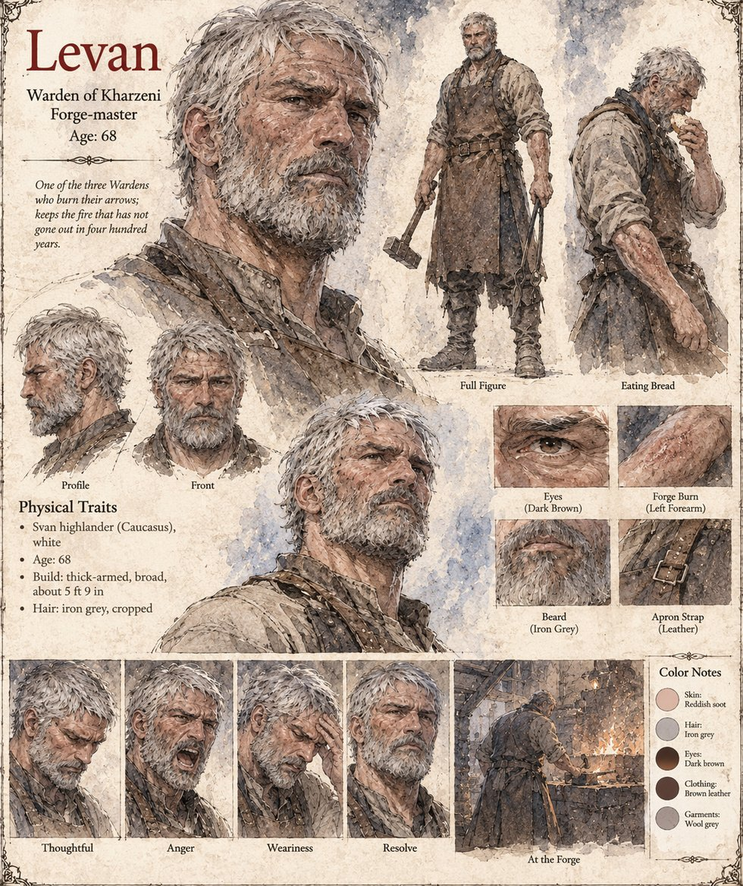

Levan of Kharzeni
Warden of Kharzeni, forge-master · keeper of a fire not out in four hundred years · one of the Three Who Would Not Ask · 68 on his sheet
Warden of Kharzeni, the valley of smiths, who sits through the extraordinary session of the twenty-ninth year with a forge-burn on his forearm that he had been carrying since the second Portion, a burn he had decided long ago was the only honest record of the Concordat that anyone in Kharzeni possessed. He is sixty-eight, severe and sentimental in the literalism of his trade, and his valley keeps a fire that has not gone out in four hundred years.
In Garren of the thirtieth year he lights it for a different use. By midnight three Wardens are in the Kharzeni forge, each with an arrow under his coat: Levan himself; Shalva of Tebukhi, fifty; and Archil of Zemoli, seventy-nine, who says he swore the arrow to the Council and the Council is dead. Let it be the one thing in this valley, Levan says, that was never asked for anything. They put the shafts in the anvil-fire and work the best bellows seven hours. At the third hour the shafts begin to soften; at the fourth the grey vanes go to ash; at the sixth the seeds in the nocks go from bright to dim to a black spot, and out. His wife brings bread at the fourth hour, and he eats it standing and thinks of nothing. Nobody keeps the ash; the smiths shovel it onto the slag-heap. Tamaz of Ghedani is asked to join and declines.
The king looks at them across the cold floor of the Hall and says he would have done the same. Guaram advises him that the Hall of Oaths has its own justice, which a king may decline to hear. Hierarch Gurgen has the three hanged on the morning of the first of Havren. In the Epilogue the slag-heap becomes a shrine to the Three Who Would Not Ask, at which pilgrims leave nothing at all. Interlude III logs the three burnt arrows as the only ones in the Receiver’s whole record besides the first to have cost nothing.
The manuscript gives his burn (on a forearm, without saying which), age, trade and fire. The sheet’s left forearm, thick arms and broad build of about 5 ft 9 in, cropped iron-grey hair and beard, dark brown eyes, soot-reddened skin, leather apron over grey wool, hammer and tongs are its own, as are its panels Thoughtful, Anger, Weariness and Resolve and its scenes At the Forge and Eating Bread. Its title line, One of the three Wardens who burn their arrows; keeps the fire that has not gone out in four hundred years, follows the manuscript. The sheet is headed simply Levan; this page is titled Levan of Kharzeni to keep it distinct from other Levans in the archive. Shalva, Archil and Tamaz have no sheets in this case and so no pages here.
“the only honest record of the Concordat that anyone in Kharzeni possessed”